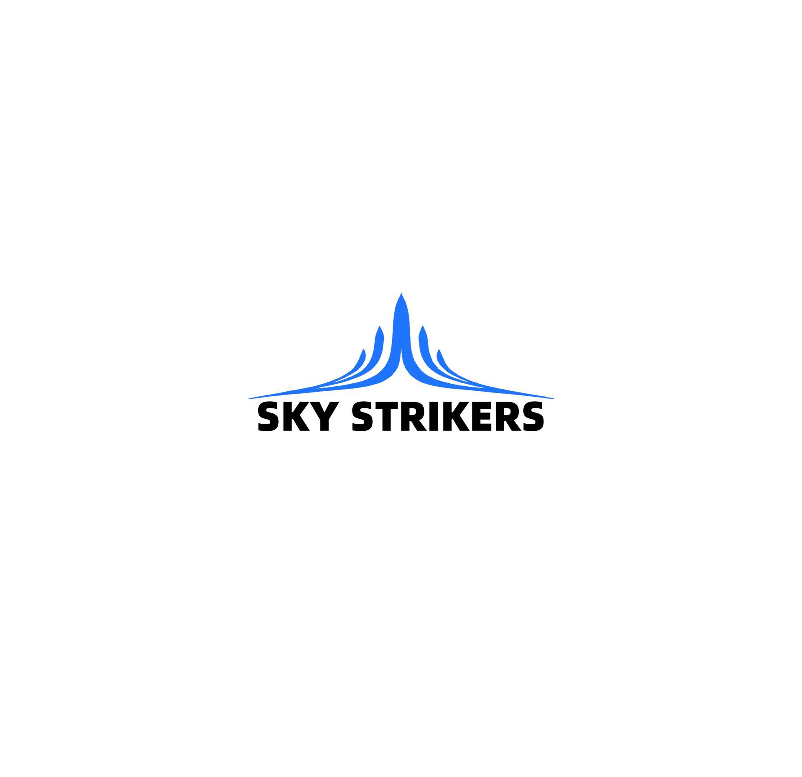

始于一行代码的旅程
星栈跃动（STACKOVATE）诞生于一个简单的信念：技术不应只为炫技，而应服务于人。它由一名初中生在2024年的暑假发起，名字寓意着从代码的"堆栈"（Stack）出发，去触碰属于每个人的"星辰"（Stars）。
我们相信"独行快，众行远"。在这里，没有复杂的商业逻辑，只有一份对编程纯粹的热爱和一份想要"让每个人都感受到科技的温暖"的初心。每一个项目，都是这份信念的微小实践。
从一行代码出发，触碰属于每个人的星辰。
星栈跃动（STACKOVATE）诞生于一个简单的信念：技术不应只为炫技，而应服务于人。它由一名初中生在2024年的暑假发起，名字寓意着从代码的"堆栈"（Stack）出发，去触碰属于每个人的"星辰"（Stars）。
我们相信"独行快，众行远"。在这里，没有复杂的商业逻辑，只有一份对编程纯粹的热爱和一份想要"让每个人都感受到科技的温暖"的初心。每一个项目，都是这份信念的微小实践。
我们专注于解决具体、微小但真实存在的问题。每个工具都力求简洁高效，界面遵循我们自有的VI规范。
我们坚信协作的力量与知识的共享。所有项目均在GitHub上完全开源，代码清晰、文档详尽。
成长的每一步都值得记录。我们将自己的学习过程、踩过的坑、总结的经验，整理成公开的笔记。

你是否曾好奇，一年前的今天，你在玩什么游戏？那份通关的喜悦，或是卡关的抓狂，如今回想起来是否别有一番滋味？
ChronoPlay 就是为此设计的。它是一个轻量级的Web应用，只需授权你的Steam账号（仅读取公开的游戏库数据），即可为你生成精美的"去年今日"游戏回顾卡片。无需安装，即开即用。
当前状态：积极策划中 | 预计于2026年第二季度上线。
查看项目每个工具都力求简洁高效，界面遵循我们自有的VI规范，确保视觉统一与操作流畅。我们提供清晰的文档，说明工具的功能、使用方法及所需权限。
作为个人开发者，我们深知信任的宝贵。所有项目均为开源，无广告、无追踪、无后台数据收集。你可以完全掌控自己的数据和体验。
我们没有KPI，只有好奇心和解决问题的热情。这份纯粹，让我们能将全部精力投入到打磨产品本身，而非追逐短期利益。
无论你是想试用我们的工具，还是想阅读我们的学习笔记，亦或是想直接参与到代码的共建中，我们都无比欢迎。
第一步很简单：访问我们的 GitHub 主页，Star、Fork 或提交 Issue，都是对我们最大的支持。
让我们一起，用一行行代码，构建一个更有趣、更温暖的数字角落。
访问 GitHub